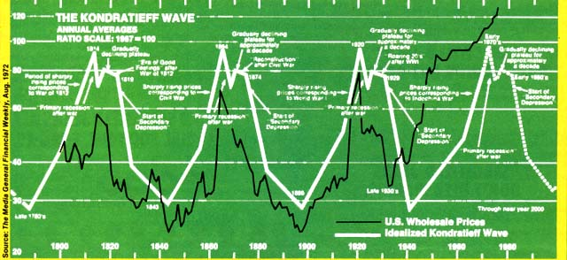

Just as Carter's campaign promise to "sweep out" the ingrown Washington Establishment has already miserably failed to materialize (not a few, but most of his "new" administration's key figures are warmed-over Kennedy, Johnson, and just plain garden-variety Washington hasbeans) ... so, too, has his promise of bold, new, decisive economic policy failed to materialize.
What we're presented with, instead, are the usual tired old fiddlings around with token tax cuts here and increases in already-bloated government spending there. More of the same old threadbare Keynesian "solutions"-in other words- that never have, do not now, and never will really and truly solve anything.
(At best, such "solutions" only postpone the inevitable ... at their much more characteristic worst, they reinforce and magnify the inevitable while postponing it so that-in the end-it becomes just that much more terrible and destructive. As British Prime Minister James Callaghan said to his country's Labor Party last September 28: "We used to think that you could just spend your way out of a recession and increase employment by cutting taxes and boosting government spending. I tell you, in all candor, that that option no longer exists, and that insofar as it ever did exist, it only worked by injecting bigger oses of inflation into the economy followed by higher levels of unemployment as the next step. That is the history of the past twenty years.")
B ut be ye of good cheer. Because, if an old Russian economist by the name of Nikolai D. Kondratieff was right, the self-pompous politicians and economists of the world really aren't nearly as important as they think anyway. For, as Kondratieff saw it, all their theories and proclamations and taxes and tax cuts and spending programs are definitely not the prime movers of the economy that they claim them to be. Such "actions", instead, are really only the sometimes-dazed and sometimes-studied but almost always irrelevant reactions to much larger forces at work in the universe. Forces that will always move at their own pace and in their own way no matter what our political and economic "experts" do. ("There is a tide in the affairs of men. . . . " and all that, you know.)
Well, whether or not you choose to believe Kondratieff (the communists certainly didn't ... after their successful revolution in Russia, they sent this Agricultural Academy professor and head of Moscow's Business Research Institute to prison in Siberia, where he died), it is interesting to compare his idealized 54-year economic cycle with the actual recorded cycle of U.S. wholesale prices from 1800 to the present. And, son of a gun. As the accompanying chart shows, there is at least as much as meets the eye to ole Nikolai the K's ideas.
Now is all this just coincidence? Perhaps. But it's an interesting enough coincidence to cause Professor Joseph A. Schumpeter, who has been called the world's foremost authority on business cycles, to introduce the Kondratieff Wave concept to the Western world. And it's an interesting enough coincidence to inspire other economists to trace what seems to be the same 54-year wave all the way back to 1260 in English agricultural prices. And it's an interesting enough coincidence to make you wonder if Immanuel Velikovsky really knew what he was talking about when he stated that the ancient Mayans used to fear a calamity of some sort every 54 years.
But, of course, that's neither here nor there as far as you and I are concerned. Most of us don't really care what happened 54 or 108 or 162 years ago. And we aren't too concerned about what happens 54 or 108 or 162 years in the future. What we want to know is what's going to happen this year and next year and the year after that? Does the Kondratieff Wave Theory have anything to say about now?
"Yes it does," answers Julian M. Snyder ... editor and publisher of the always useful economic newsletter, International Moneyline. And, for the past year or so, Mr. Snyder has been telling his readers exactly what he thinks the Kondratieff Wave has to predict.
"The period immediately ahead will be one of great economic danger coupled with great opportunity," says Mr. Snyder. "The danger will come from the continuation of the disastrous policy of inflationism in all Western countries ... and the opportunity will result from a precarious temporary equilibrium between (that and) the forces of long-term economic decline.
"According to Kondratieff's projections, a commodity price explosion was due in 1974 ... which was exactly when it did take place. The Western world has now entered the end of its growth period for this cycle and is entering a roughly 25-year period of economic decline. At present we are going through what Kondratieff described as the "plateau period", or early stages, of that decline.
"This is the time when the inflationism of our governments will be balanced briefly by the de flationary forces that, sooner or later, are destined to overtake us. And it is unfortunate but-just as during the "Era of Good Feelings" after the War of 1812, the "Reconstruction" that followed the Civil War, and the "Roaring 20's" after World War I-all the worst ideas of the politicians and economists may, for a time, seem to work magnificently during this period.
"It will appear, for a time, that our governments can create almost unlimited quantities of paper money without having to deal with a corresponding increase in the general level of prices. This is because the force of the long economic wave, just as it begins to break down. ward, will-for a time-neatly offset the flat money inflation of the politicians ... just as it did in this country from 1921 to 1929.
"As a result, the Dow Jones Industrial Average will rise to an incredible peak. The Gross National Product will increase as never before. Unemployment will almost vanish. We will hear much talk that we have at last defeated the oldtime business cycle.
"On a much larger scale, then, it will be a replay of the Roaring 20's again. And, just as that age came to an abrupt end in 1929, this will all come to a sudden end in a great crash. A crash that will plunge us into the long night of a super-depression that may spell the end of society as we know it.
"And-although wars, consumer demands, politics, central bank monetary decisions, and other factors may affect the precise point at which this massive downturn takes place in different countries-the overall effect of anything we may or may not do about the coming crash will be marginal. We will be far wiser during this plateau period-this time of transition between now and 1982 or 1984-if we just sit back, relax, and enjoy the Last Great Boom of the 20th cantury .
Well, as stated above, whether you choose to believe in the Kondratieff Wave (or Mr. Snyder's interpretation of it) or not ... you must admit that it makes good reading and at least as much sense as any other economic theory currently being kicked around. And if you do want to know more about Kondratieff and how to apply his ideas to today's world, try dropping $25 to Julian M. Snyder, International Moneyline, 16 East Trail, Darien, Connecticut 06820. You should find the packet of translated original Kondratieff writings and critiques that you receive by return mail more than worth their price.
The idealized Kondratieff Wave... and the actual U.S. Wholesale Price Index in 1967 dollars since 1800 If Kodratieff is right, we're in for a real stem-winder when we fall off the edge of the economic earth this time around!
|
 |
|
|